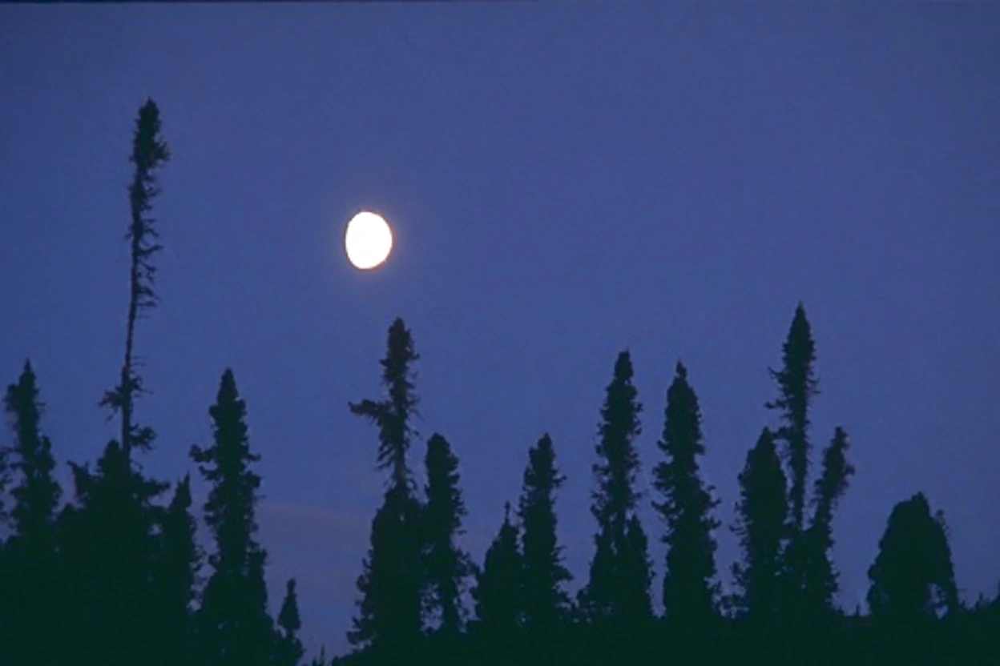
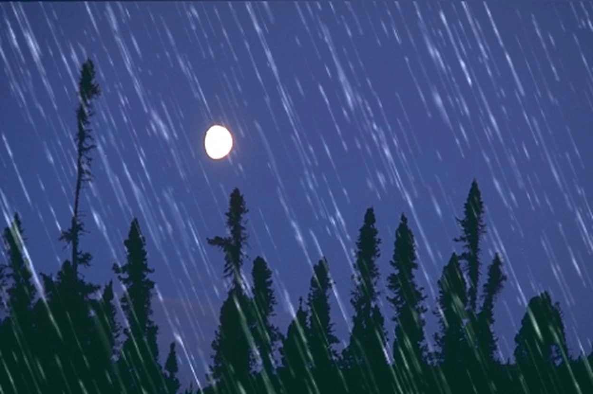
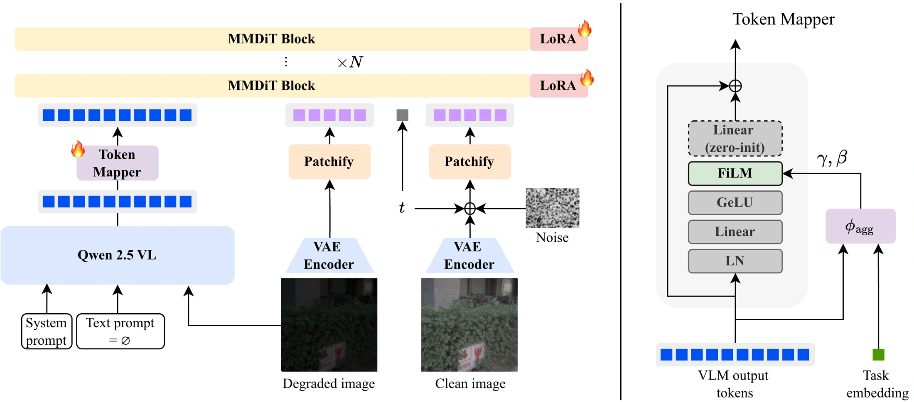
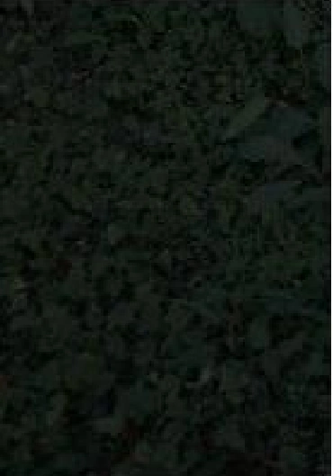
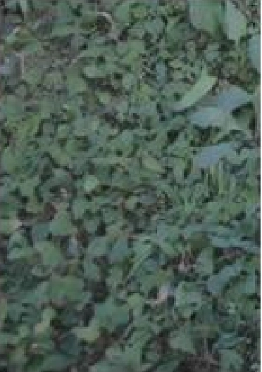
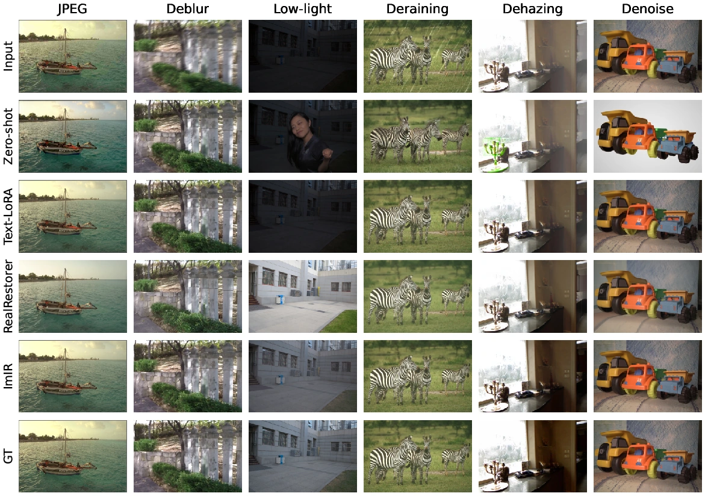

ImIRImage-Instruction Tuning for
All-in-One Image Restoration
Codeway AI Research


Abstract
Degradations vary widely across images, so a practical restoration system has to handle many degradation types with one model. A recent and effective recipe adapts a large pretrained image-editing model to restoration using a small low-rank adapter with a text prompt. We replace that prompt with an instruction derived from the degraded image itself. The image reaches the editor through two paths: its structure comes from the model’s VAE, and its semantic instruction comes from a lightweight token mapper that shifts the degraded image’s vision-language embedding toward the embedding a clean image would produce. Because the instruction is a continuous vector, scaling it yields a family of valid restorations for tasks whose target is not unique, such as low-light enhancement. We adapt one Qwen-Image-Edit model to six tasks with a single adapter trained in about three hours on one GPU. The image instruction outperforms text conditioning under a matched comparison, and it supports task agnostic restoration without a degradation label, which the text variant does not.
Method
The degraded image reaches the editor through two channels. Its VAE encoding supplies spatial structure, while a token mapper predicts a clean-image instruction from its vision-language embedding. We keep the backbone frozen and train one shared low-rank adapter.

Instruction scaling
We scale the mapper’s residual shift to move along the degraded-to-clean direction. For tasks whose target is not unique, such as low-light enhancement, varying the scale produces a family of valid restorations.
êx = ey + s · gθ(ey; γ, β)
Increasing the scale brightens the low-light image through a range of plausible exposures. Scaling beyond the default begins to over-brighten the output.


Quantitative results
We compare image and text conditioning on the same backbone. The image instruction improves PSNR on all six tasks. The task-agnostic variant performs on par with the task-aware model without a degradation label.
| Task | Text LoRATask-aware | Text LoRATask-agnostic | Text LoRAVLM prompt | ImIRTask-agnostic | ImIRTask-aware | Gain over Text LoRATask-aware comparison |
|---|---|---|---|---|---|---|
| Low-light | 16.3 | 15.6 | 16.5 | 21.2 | 21.3 | +5.0 dB |
| Deraining | 32.5 | 17.5 | 17.2 | 33.0 | 33.2 | +0.7 dB |
| Dehazing | 21.0 | 17.2 | 17.8 | 24.4 | 24.7 | +3.7 dB |
| Deblurring | 26.8 | 17.8 | 17.2 | 27.6 | 27.6 | +0.8 dB |
| Denoising | 34.4 | 19.0 | 18.6 | 35.6 | 35.7 | +1.3 dB |
| JPEG | 27.4 | 17.0 | 16.6 | 27.9 | 28.1 | +0.7 dB |
All variants use the same backbone and training data. Task-agnostic Text LoRA uses one neutral prompt; the VLM-prompt variant uses a per-image instruction generated by Qwen2.5-VL. Task-agnostic ImIR receives only the input image.
Qualitative comparison

Citation
% TODO: Add the official BibTeX citation % after publication details are available.